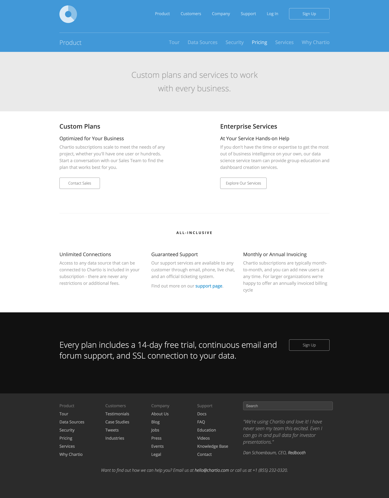
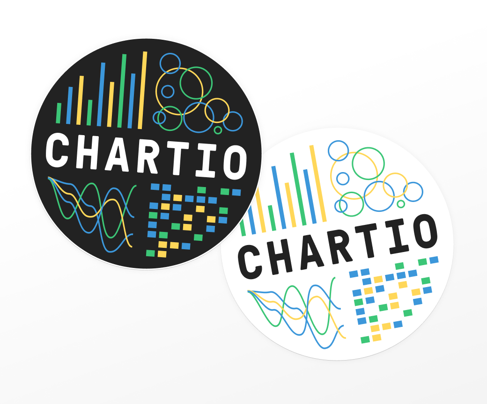

I spent my first few years with Chartio focusing largely on the product itself. I would make small improvements to pages as leadership needed, at most giving the home page an updated look, but I was eventually given the chance to start clean.
Chartio website and brand update (2017)
 The chartio.com website when I was first hired (not my design).
The chartio.com website when I was first hired (not my design).

 One of the first things I did when I was hired was compile a basic style guide the team could access.
One of the first things I did when I was hired was compile a basic style guide the team could access.
 An early iteration on the homepage I launched in later 2014.
An early iteration on the homepage I launched in later 2014.
 A later iteration from 2016. This version was largely based on feedback and requirements from user tests and the marketing team.
A later iteration from 2016. This version was largely based on feedback and requirements from user tests and the marketing team.
In early 2017, I redesigned and rebuilt the entire marketing website and created the first printed brand guide for new employees and partners to reference. I introduced Roboto Slab as a second typeface for headlines to bring a little bit of sturdy warmth into the picture.
 The new chartio.com. This design remained largely unchanged for about three years.
The new chartio.com. This design remained largely unchanged for about three years.
 The old product page.
The old product page.
 The new product page.
The new product page.
 The old customers page.
The old customers page.
 The new customers page.
The new customers page.

The old pricing page.
 The new pricing page.
The new pricing page.
The single-word theme I kept in my mind throughout the project, and my entire Chartio career, was “clarity”. In data visualization, clarity is key, so the branding of a data visualization company in a crowded confusing marketing should be as clear as possible.
 Chartio's first printed brand guide.
Chartio's first printed brand guide.

Chartio stickers using the new, brighter colors.
 The homepage featured a looping, short video demonstrating how quickly a chart could be built and added to a dashboard in Chartio which played automatically.
The homepage featured a looping, short video demonstrating how quickly a chart could be built and added to a dashboard in Chartio which played automatically.
Thanks for taking a look. Reach out anytime. I hope you’re having a nice day :)Copyright © 2013-2020 Steven Lewis